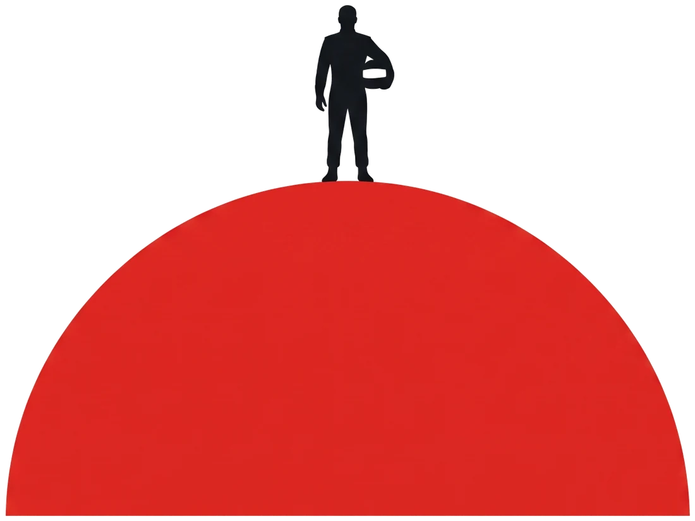

Si eres deportista
- Perfil deportivo, identidad y audiencia declarada
- Calendario de competencias del año
- Capacidades de activación y contenido
- Sectores de interés y restricciones (marcas que no aceptas)
- Puntaje ProMatch con diagnóstico y revisión humana